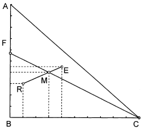

令和3年度 問29 化学プロセス
3成分（A、B、C）の液液平衡関係を表すのに、下図のような二等辺直角三角図を用いた。図中、頂点A、B、Cは各純成分を表し、辺AB、BC上の目盛は質量分率である。次の記述のうち、最も不適切なものはどれか。

①
点Mで表される液において、成分Cの質量分率は0.3である。
②
点Fで表される液に成分Cを加えていったときの液の組成は、常に線分CF上にある。
③
組成が線分CF上にあるとき、成分AとBの質量比は常に等しい。
④
点Fで表される液は、成分AとBの2成分から成っている。
⑤
点Mで示される液を静置したとき、点Eと点Rで表される2液層に分かれたとすると、（Eの質量）：（Rの質量）=1：2となる。
正答
⑤ 点Mで示される液を静置したとき、点Eと点Rで表される2液層に分かれたとすると、（Eの質量）：（Rの質量）=1：2となる。
三角図は抽出においてよく使用されます。抽出対象の溶質を抽質、抽質を溶かしている溶媒を希釈剤と呼びます。希釈剤に溶かした抽質を、より抽質の溶解度が大きな抽剤で取り出します。今回ではAが抽質、Bが希釈剤、Cが抽剤です。
縦軸のメモリは成分Aの質量分率、横軸のメモリは成分Cの質量分率を表します。残りの成分Bについては、全体の質量分率1から各成分の値を引くことで得られます。
2番の点Fは成分Cの質量分率が0であることを表します。つまり成分AとBのみです。
3番および4番の点Fの状態は成分Cが無い状態です。そこから成分Cを加えていくため、成分Cの比率増加に伴って同じ比率で成分ABは減少していきます。成分Cを加えるだけですので成分ABの比率は変化しません。
5番のRが希釈剤側、Eが抽剤側です。それぞれの質量比E：Rは、てこの原理よりRM：MEで表せます。E：R＝RM：ME＝0.2：0.1＝2：1となります。